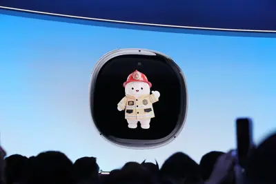
其他
其他全部主題
Meta is planning to price the Muse Charm, a little gadget with a screen that lets you chat with your Muse AI agent, at $300, according to The Information. CEO Mark Zuckerberg revealed the gadget earlier this year and said the company expected to ship the Charm "in time for the ho
Google新推出AI模型Gemini 4 Neon，主要用於複雜程式開發、企業資料分析及需要長時間執行的AI代理任務。在Google Antigravity開發環境的協調模式中，Neon負責規畫任務並檢查執行成果，速度較快的Gemini 4 Hydrogen則負責修改程式、更新套件及執行測試。新模型已陸續開放開發者、企業及付費訂閱者使用。
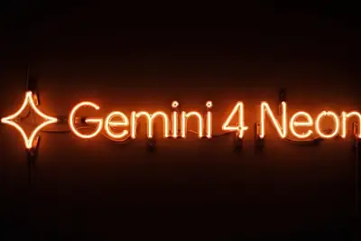
IT之家 11 月 19 日消息，北京时间今天（19 日）深夜，AI 初创企业 Anthropic 正式登陆美股，以 813 亿美元 （IT之家注：现汇率约合 5,431.47 亿元人民币） 的募资额创下 IPO 历史纪录。 公司 CEO 达里奥 · 阿莫代伊在纳斯达克敲响开市钟。“今天的上市让公司的财务基础更加稳固，也让我们更加坚定了 做正确事情 的决心。” Anthropic 的发行价定为 每股 83 美元 （现汇率约合 554.5 元人民币） ，高于上周公布的预期区间，完全稀释后市值达到 1.5 万亿美元 （现汇率约合 10.02 万亿元人民币）
Today is a new beginning for Anthropic: a years-in-the-making IPO that beat out SpaceX for most valuable of all time, having raised $81.3 billion and set an important precedent for the other public AI lab debuts to come. But it's not simply a financial milestone. Anthropic was fo
Google's latest update to Gemini brings an AI agent to the Mac that can organize files, fill out forms, and tackle multistep workflows.
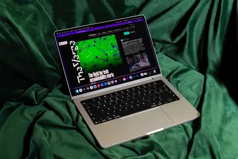
Jensen Huang has resigned from Nvidia following an affair, which could have ramifications for national security as the U.S. and China race to develop the most advanced AI infrastructure.
Gemini spark on a space background
早安。
NVIDIA前執行長黃仁勳離任，由財務長Colette Kress接任代理執行長，首次財報電話會議上稱「一切照舊」，來自供應商和合作夥伴的支持依然強勁。
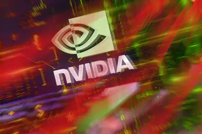
如果說 30 多年來，全球科技產業有哪位執行長最難取代，NVIDIA 創辦人黃仁勳絕對榜上有名。然而，黃仁勳近 […]
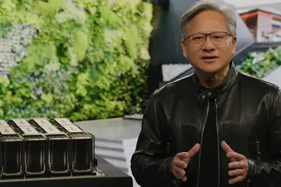
Google現在每年持續推出TPU新品，且觀察目前市況，TPU顯然已變成整個AI晶片市場當中，最能夠和NVIDIA競爭的重點產品。半導體供應鏈業界人士直言，現在TPU訂單規模，已使得Google可穩定地在客戶名單中排在前三名了，可看出TPU熱度確實非...
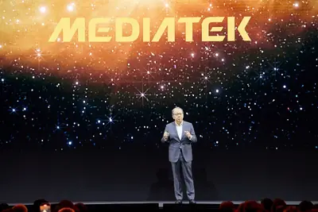
NVIDIA創辦人黃仁勳辭去執行長職務，餘波持續發酵。供應鏈業者表示，儘管NVIDIA短期內仍面臨美國國會與監管機構的調查風波，但2027年已發出的AI資料中心（AIDC）訂單基本面依然穩固。
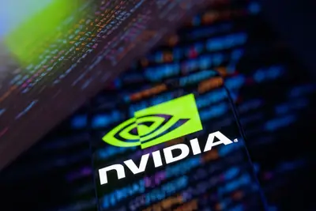
黃仁勳辭去NVIDIA執行長，NVIDIA近期宣布成立國家安全與出口管制監督委員會，面對此事件對AI供應鏈發展的影響，台灣IC通路商表示，黃仁勳的「技術實力」、「個人魅力」和「對台感情」這三大特點無可取代，雖然這次事件不會影響AI長期發展趨勢，但短期仍須面...
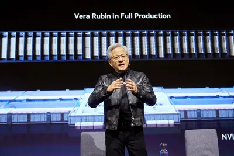
隨著美國期中選舉民主黨獲勝，以及NVIDIA黃仁勳請任執行長，市場高度關注美國AI基礎建設的後續走向。供應鏈業者剖析，短期NVIDIA人事異動對美國AI資料中心（AIDC）的建置進度影響有限，真正的關鍵瓶頸與產業轉折點，在於美國當地的電力供給與政治版圖重組...
黃仁勳閃辭NVIDIA執行長與董事，伺服器ODM業者坦言，心中震撼難免，然目前客戶訂單暫時不變，與NVIDIA的產品開發藍圖也未變。後續將緊盯2件事，一為誰接任執行長？二為產品開發腳步是否放緩？<br /...
人工智慧（AI）來自以GPU為核心的晶片及伺服器所提供的算力。算力需求愈高，晶片的數量就必須愈多。除運算本身的耗電外，散熱冷卻也是造成耗電的原因之一。如果現代的生活已離不開AI，如何降低耗電與碳排成當務之急。根據政府規劃，台灣將參考外國作法，推動算力中心能...
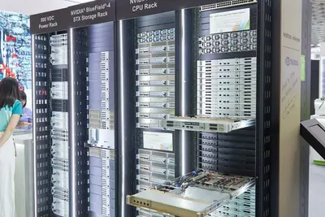
黃仁勳離開NVIDIA，讓美國開源生態失去能同時提供資金、產業資源與政治影響力的重要推手。少了他的支持，開放權重模型能否持續發展、與封閉模型抗衡，成為外界關注焦點。
美國收緊先進AI晶片出口管制，並將限制範圍延伸至第三地資料中心提供的遠端算力服務，中國大型科技業者也持續擴大境內算力建置。
隨著黃仁勳重返NVIDIA執行長之路受阻，引發對AI硬體世代交替放緩的擔憂，更讓台廠在各大客戶之間的產能分配與訂單比重，成為市場放大檢視焦點。
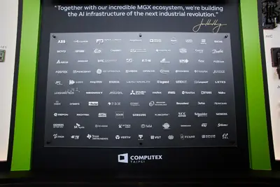
台積電董事會近期公告，將入股美國兩大 AI 公司，並成立新的投資子公司。 在最後一刻宣布入股，台積電要以此穩住 […]
熟悉的老歌往往能瞬間把人拉回數十年前，連帶喚起早已淡忘的情緒。以色列學者最新研究回顧指出，這種記憶與情感交織的 […]
Anthropic 於 11 月 19 日正式在美國那斯達克掛牌上市，首日完全稀釋後估值一度達到約 2 兆美元 […]
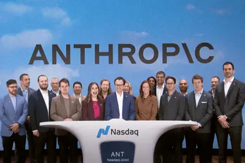
輝達（Nvidia）共同創辦人黃仁勳雖已辭去執行長職務，但路透社報導，黃仁勳依法符合提名董事候選人的資格，可在 […]
IT之家 11 月 20 日消息，本月召开的 Ignite 2026 活动中，微软宣布携手英伟达加速本地 AI 体验落地，让 AI 从“必须联网才能用”的云端服务，逐步走向“能在自己电脑上运行”的本地体验。 根据双方公布的合作愿景，搭载英伟达 RTX Spark 的 Windows PC 能运行本地大语言模型能力，让用户不必完全依赖网络，就能在电脑上直接使用 AI 助手、生成内容或处理文档。 本次双方合作为 GPU 加速的 Windows 365 云 PC，引入低延迟图形传输能力 Direct Stream，最多支持两路 60 帧 4K 画面，公开预览预
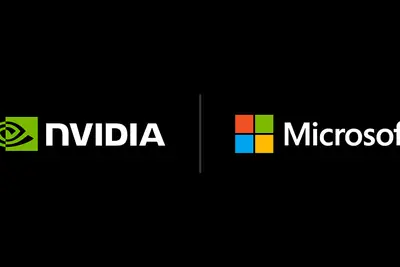
美國商務部工業暨安全局（BIS）16日公布新先進 AI 晶片出口管制，將新加坡、馬來西亞、泰國、印尼及巴西納入 […]
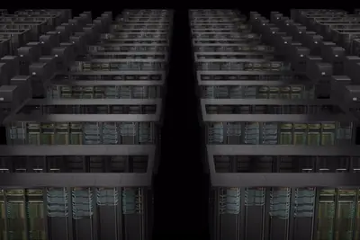
IT之家 11 月 20 日消息，彭博社马克 · 古尔曼（Mark Gurman）今日报道称，苹果正在开发自主 AI 智能体，计划让 AI 代替用户执行设备操控、应用操作、网页浏览和软件编程等任务，进一步进入由 OpenAI、Anthropic、Meta 等公司参与竞争的 AI 智能体市场。 古尔曼发现，苹果已经在官网发布招聘信息，其中一份职位招聘面向高级工程经理，岗位名称为“主动式智能体 AI”（Agentic AI - Proactive）。招聘信息称，苹果正在组建团队开发能够代表用户执行任务的 AI 助手，相关系统将具备编写代码、浏览网页、控制应用
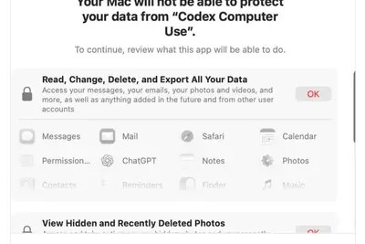
IT之家 11 月 20 日消息，当地时间 11 月 19 日，谷歌宣布为 macOS 版 Gemini 应用推出全新的“电脑操控”（Computer Use）功能，允许 AI 直接操作 Mac 上的桌面应用、访问本地文件及浏览网页，独立完成多步骤任务（IT之家注：该功能目前面向美国地区的英语用户逐步开放）。 根据谷歌官方介绍，用户只需通过自然语言描述任务，Gemini 就能在不同应用之间切换，执行点击、输入文字、填写表单及操作菜单等任务。 谷歌列举的应用场景包括批量处理照片、从本地 PDF 文件提取信息并填写在线表单、根据实时数据制作演示文稿，以及整理
Apple is working on its own AI agent that can perform a range of tasks for you, including browsing the web, working across apps, writing code, and calling services. That's according to a job listing spotted by Bloomberg, which says Apple is looking for an engineer to lead the cre
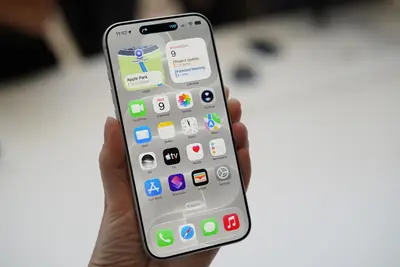
美國聯邦眾議院外交委員會於週四公布官方文件，揭露美國商務部轄下機構已批准向中國企業銷售超過 87.9 萬顆高階 […]
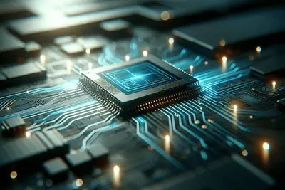
"We've got this," Colette Kress, interim CEO of Nvidia, said Tuesday night as she closed out the embattled chip company's third quarter earnings call. By Thursday, the company's stock price was hovering at around $150 per share, a nearly 40 percent drop from its all-time high on
This week on “Uncanny Valley,” we discuss the outages that have swept digital life over the past week, where new money from Anthropic’s IPO is going, and the AI chip world post-Jensen Huang.
Are the recent outages in the airline booking systems, banking platforms, and productivity platforms really a coincidence? There's actually likely something deeper going on, cybersecurity experts say.
Lawsuit: Over 99% of school system’s AI gun alerts were false positives.
Google is updating its homepage to include AI searches. In a post on X, Google's vice president of product, Robby Stein, shows how you can now open a collapsible sidebar to view and continue your AI chats. Based on the GIF shared by Stein, it looks like you can open the sidebar b
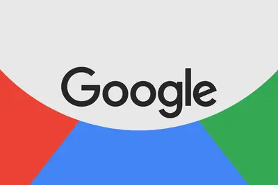
NVIDIA and Microsoft are extending their full-stack collaboration to help organizations build, customize and deploy intelligent applications — from next-generation infrastructure on Azure to industrial systems and Windows PCs. At Microsoft Ignite, the companies are expanding acce
Article URL: https://www.anthropic.com/research/claude-black-hole-physics Comments URL: https://news.ycombinator.com/item?id=50563148 Points: 344 # Comments: 155
Feeling adventurous? This Linux distribution is exciting, efficient and totally unique.
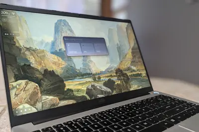
With temporary threads, any searches you run in Google’s AI Mode won’t be associated with your account or saved to your chat history.
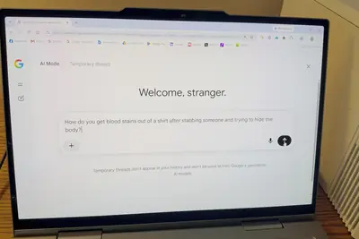
IT之家 11 月 19 日消息，据界面新闻今日报道，在 2027 财年第二季度财报分析师电话会上，阿里巴巴集团 CEO 吴泳铭表示， 2027 年和 2028 年，将是中国算力最紧缺的两年 。2027 年以后，阿里云的芯片供给都会以国产平头哥芯片为主，同时也会采购其他国产芯片来支持内部的推理需求。 吴泳铭提到， 阿里的旗舰芯片会优先满足于大模型的训练 ，以保障模型迭代。在此基础上，也会考虑合作伙伴的客户的需求， 在推理层面上，阿里会尽量去采购更多不同的芯片 ，也包括其他品牌的国产芯片。 据IT之家今日早些时候报道，吴泳铭表示， 千问已经在平头哥芯片上训
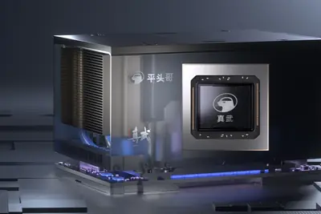